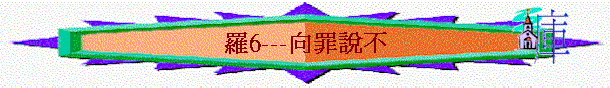

經文：羅6:1-14
引言：若一個信徒對你說：「我信了主後，主會不斷施恩典，赦免我的，所以我可以偶然犯罪，主也有恩典」，你聽了之後，有甚麼感覺？你同意他的說法嗎？為甚麼？我們今天看一看聖經如何看罪？我們信主後與罪的關係……
一.聖經的立場
～6:1提出甚麼問題？6:2聖經的立場是怎樣？
～為甚麼保羅有這堅定的立場？何謂「在罪上死了的人」？
～下文有仔細解釋「在罪上死了的人」之意思
二.仔細解釋
A.歸入基督
1.6:3提到「受洗」，以前的人信主後即受洗，而你認為一般人覺得受洗是甚麼意思？
2.6:3又將受洗與甚麼字放在一起？（歸入基督）
3.何謂「歸入基督」？（整個人在主裡面，相信祂，屬於祂）你認為自己已「歸入基督」嗎？是部份歸入或全部歸入？為甚麼？
4.一個歸入基督的人，可否走回頭路？為甚麼？
B.與主同死
1.6:3提及「受洗歸入祂的死」，「祂的死」指甚麼？祂為甚麼要死？(祂為人的罪死在十架中)
2.我們信主後的肉身是否死了？為何我們信主是「歸入主耶穌的死」？(耶穌的死代了我們死---如同我們死在十架中)
3.6:6提及「舊人」及「罪身」是甚麼意思？(以前犯罪的我，以前被罪捆綁的我)
4.6:6提及「罪的奴僕」代表我們以前與罪的關係是怎樣？（罪是主人，我們是奴隸，奴隸一定要聽主人的吩咐，奴隸沒權ＳＡＹ ＮＯ）有能力擺脫罪嗎？
5.試分享在未信主前，有甚麼不好的脾性/習慣，時常不能擺脫的？
6.6:6-7提及我們信主後，我們的「舊人」及「罪身」會怎樣？（會滅絕）最終帶來甚麼結果？（‘罪’這個主人已死了，我們不不再作罪的奴僕）
7.「不再作罪的奴僕」是甚麼意思？（我們有自由了，可以有權不犯罪，罪的鎖鏈已斷，有權走出罪的範圍，以前是不犯罪也不能，現在有能力及有自由選擇不犯罪了）
8.試分享你信主後，得勝罪惡，不作罪的奴僕之經歷？(例如有甚麼不好的事情已有能力擺脫或不再犯)
C.與主同活
1.6:4又提及我們除了與主同死外，信主後有甚麼改變？（與主聯合，有新生的樣式）
2.何謂「新生的樣式」？（有新的生命，同以前犯罪的我不同，有像主的樣式）
3.有沒有見過一些朋友/同學，信主後有全新的改變？試分享
4.6:5又提到信主後不單內心有改變，將來我們會與主怎樣？（與主一同復活）
5.一般人認為人死後會怎樣的？我們信主的人死後會怎樣？
6.若將來真有復活，我們的身體會怎樣？（身體會改變，有新的樣式）復活的情景又是如何呢？（會有榮光，會永遠不死，會見到主，會與主聯合）
D.主的榜樣
1.6:9提及主從死裏復活後，他與死有甚麼關係？（沒關係，祂不再死，死也不再作祂的主了）6:10祂為人的罪死了多少次？（１次）罪可否騷擾已死的人？
2.6:10提及主從死裏復活後，祂以後的人生又為誰而活？（為神而活）
3.所以我們應當效法基督甚麼事情？（從今日看罪而死了，與罪沒關係，現活著，不是為罪，而是為神為主而活）
4.6:12-13保羅又有甚麼勸勉？我們今日這個人(或肢體)從此應要怎樣？（不容罪作王，不將肢體（自己整個人）獻給罪，而是獻給神）
5.「將自己獻給罪」與「將自己獻給神」有甚麼分別？（獻給罪作不義的器具，獻給神作義的器具，從此人生的方向及用處也不同）
6.你覺得自己「獻給罪」多或「獻給神」多？為甚麼？
7.若一個基督徒說：「我根本受罪轄制，沒能力不犯罪，所以注定要獻給罪作不義的器具」你聽後，有甚麼回應？6:14又有甚麼回應？（罪必不能作主，我們有能力不受罪轄制，而且也有神的恩典幫我們）
總結：一個信主的人有甚麼改變？他應如何看罪？你又有甚麼立志？
祈禱